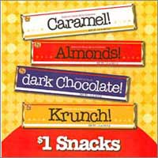
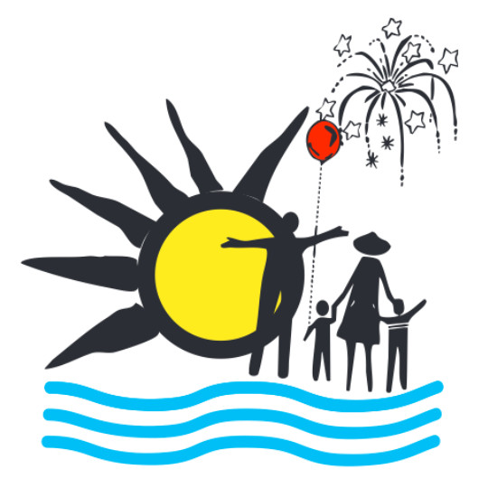
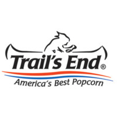

-
Candy BarsWith this fundraiser in March, scouts go door to door selling candy bars. They cost $1 each with 50% going to support the scouts. Scouts also sell in front of certain stores during this period. Of the three selling fundraisers, this is the only fundraiser the scouts participate in in the spring.
-
Riverfest Chicken DinnerRiverfest is the annual city wide event. On Sunday there is a final blow-out in the park. Lunch is a catered chicken meal and the scouts serve the meals. At the end of the event, the Monticello Lions club contributes some amount of the proceeds to the scout troop. These funds help support the troop in its day to day operations. Therefore all the scouts volunteer and benefit from the event.
-
Trails End PopcornSold over the month of October and delivered by Thanksgiving, Trail's End popcorn is a gourmat brand. There are many different flavors to chose from between tins and prepopped corn to microwave bags. Trail's End also offers a troop donation option on their forms. 70% of the popcorn costs go to the scouts, 35% to the individual scouts and 35% to the local scouting council. Trail's End is a delectable treat and makes excellent gifts.
-
Christmas WreathsAlso sold in October and delivered at the same time as the Popcorn, Wreaths make a great Christmas decoration. There are many evergreen options available including Garlands and Swags. There are also a few accessories like door hangers and a wreath light set. From every item sold the scout gets $0.50. Have a happy holiday with a wonderfol evergreen piece.